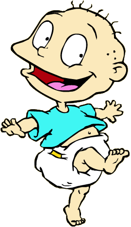

RUGRATS
Home•
Tommy•
Chuckie•
Phil and Lil•
Angelica•
Dil •
Reptar

Thomas Malcolm "Tommy" Pickles is the main protagonist as well as the center character of Nickelodeon's animated TV series Rugrats (and all films except Rugrats in Paris: The Movie and Tales from the Crib: Snow White, in which he is a supporting character) and its spin-off All Grown Up!. He is clad in only a T-shirt and a diaper, and is bald with big, blank eyes. He translates everything adult into baby gibberish, like most babies. Arlene Klasky said that she based the character of Tommy on her own son. Tommy does not wear shoes most of the time.